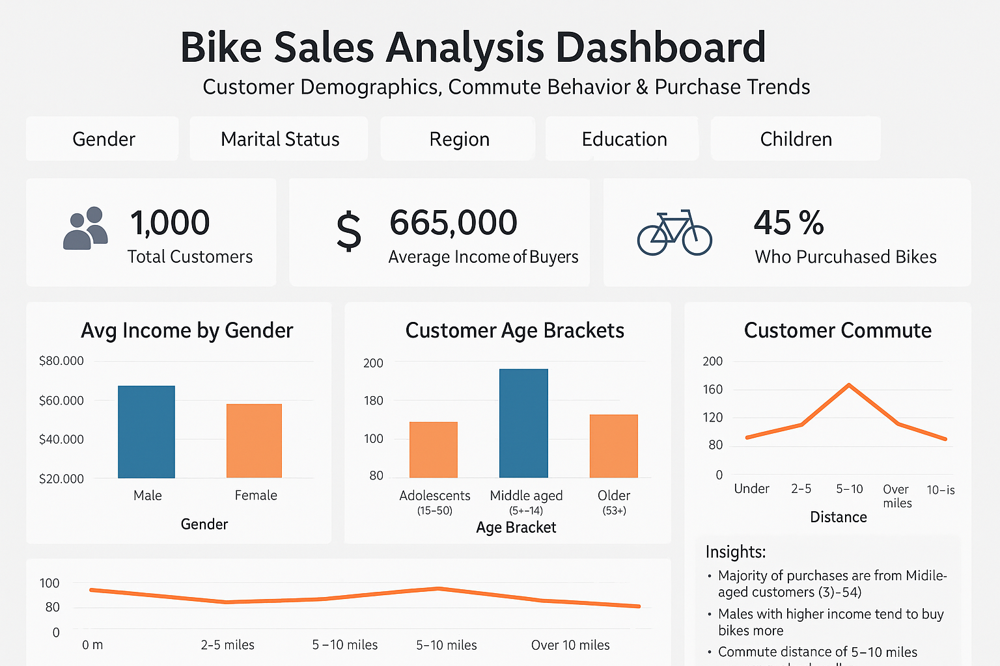

An end-to-end Sales and HR analytics solution built with Power BI and DAX,
transforming Adventure Works data into actionable business insights.
Key Features:
Executive Summary
This project delivers an interactive Power BI analytics solution integrating
Sales and Human Resources data from the Adventure Works database. By combining
financial, operational, and workforce metrics, the dashboard provides
stakeholders with a comprehensive view of business performance, profitability,
and employee distribution.
Key Insights & Business Highlights
Sales & Revenue Analytics
-
Revenue & Profitability:
Analyzed sales performance, revenue, profit margins, and regional growth
to identify key business drivers.
-
Order & Product Performance:
Evaluated order volumes and product performance to identify high-performing
product lines and seasonal sales trends.
-
Regional Performance:
Compared sales performance across territories to identify strong markets
and opportunities for improvement.
HR & Workforce Analytics
-
Workforce Structure:
Analyzed employee headcount across departments, roles, and tenure groups
to understand workforce distribution.
-
Compensation Analysis:
Evaluated salary distributions across departments and job functions to
identify compensation patterns and support pay-equity analysis.
-
Workforce Productivity:
Analyzed sick leave and time-off trends alongside departmental metrics
to identify workforce efficiency patterns.
Technical Approach
-
Data Modeling:
Built a structured star-schema data model connecting Sales, HR, and
supporting lookup tables for reliable analysis and filtering.
-
DAX Development:
Developed custom DAX measures for KPIs, sales and profit analysis,
time-intelligence calculations, year-over-year and month-over-month
comparisons, and HR metrics.
-
Data Relationships:
Resolved relationship and cross-filtering challenges to ensure accurate
aggregations and consistent dashboard interactions.
-
Dashboard Design:
Designed an intuitive, interactive dashboard with structured navigation
and visual storytelling to make complex business data easier to interpret.
Project Overview
A comprehensive Sales and HR analytics dashboard developed using
Power BI, DAX, and the Adventure Works dataset.
-
Sales Intelligence:
Revenue, profitability, product performance, order trends, and regional
sales analysis.
-
HR Analytics:
Workforce distribution, tenure, compensation, sick leave, and
departmental analysis.
-
Data Modeling:
Star-schema design, optimized relationships, and reliable cross-filtering.
-
DAX & Reporting:
Custom measures, dynamic KPIs, time-intelligence calculations, and
interactive data visualization.

For the Primary Healthcare Access and Coverage Analysis, the SQL workflow was designed to transform disparate datasets—raw functional facility counts and WorldPop population estimates—into a unified, quantifiable metric for visualization.
This script served as the single source of truth for the analysis, using the following key techniques to prepare the data for Power BI visualization:
- Common Table Expressions (CTEs): Used to modularize the data flow, first to aggregate and clean the raw facility data by Local Government Area (LGA), and a second to calculate the final coverage ratio.
- Data Aggregation and Grouping (GROUP BY): Essential for totaling the number of functional PHCs per unique LGA.
- Calculations and Casting (CAST): The core metric, Population per Functional PHC, was calculated by dividing the LGA population by the facility count. The CAST function was used to ensure the division was performed as a decimal, preserving the precision of the coverage ratio.
- Conditional Logic (CASE / NULLIF): A CASE statement was implemented to create the final qualitative categories (Good, Moderate, Poor) for visualization, allowing the dashboard to easily segment LGAs based on the ratio (e.g., Poor if > 20,000).
The NULLIF function was used to prevent division-by-zero errors in LGAs where no functional PHCs were reported.
- Data Integration (LEFT JOIN): A LEFT JOIN was performed to merge the WorldPop LGA population data with the calculated PHC count, ensuring every LGA was included in the final result set, even those with zero functional facilities.
Used SQL to transform facility and WorldPop population data into a
unified measure of primary healthcare access across Nigerian LGAs.
Techniques: CTEs, GROUP BY, CAST, CASE, NULLIF,
and LEFT JOIN.
Key Metric: Population per Functional PHC, categorized
into Good, Moderate, and Poor coverage levels for visualization.

Developed an interactive Excel dashboard to analyze bike sales data across different regions, customer segments, and customer trends.

This project involved a comprehensive analysis of an AI model's performance in classifying farmer plots as Valid or Invalid against human validation, addressing a critical bias issue and driving actionable improvement strategies.
Skills Demonstrated: Data Analysis, Power Query (ETL), Pivot Table Construction, Data Visualization (Excel Dashboard/Charts), Performance Metrics Calculation, Technical & Strategic Reporting.
Challenge
The core challenge was a systemic bias in the AI model, resulting in a True Negative (TN) rate of 0 (the model never correctly identified an Invalid plot). This severe bias led to high False Positives (FP=256), where the AI consistently overestimated Valid plots.
Action & Analysis
I utilized Excel, Power Query, and Pivot Tables to clean, analyze, and segment a 500-plot dataset, calculating Accuracy (40%), Precision (44%), and Recall (82%). My analysis pinpointed specific areas of failure across various subgroups:
- Subgroup Mismatches: Identified that the AI struggles most with Medium farms (107 mismatches) and crops like Rice (68 mismatches) and Sorghum (60 mismatches).
- Geographic & Demographic Patterns: Found that the AI performed lowest for the 45+ age group and showed a bias toward over-validating plots from Uganda and Zambia.
- Visualization: Developed an interactive Excel Dashboard and charts to visually communicate these complex subgroup insights to stakeholders.
Impact & Recommendations
The analysis delivered concrete, two-pronged recommendations for model improvement and operational change:
- Technical Fixes: Recommended retraining the AI with a balanced dataset and including farm size, crop type, and age group as contextual features to mitigate the bias.
- Operational Strategy: Advised leadership to prioritize manual review for high-risk categories (Medium farms, Rice, and Sorghum) to improve efficiency while the model is updated. The data also informed the need for focused training for human validators in high-error regions.